Index
 ImageMagick Examples Preface and Index
ImageMagick Examples Preface and Index
| |
 3D Bullets from Shapes 3D Bullets from Shapes
| |
Using a script to generate huge numbers of images
Color tinting and shaping a 3-D gray-scale shade image
|
|
Making Logos 3D
|
Using transparent overlays to tint the basic shaped image
|
|
Reflections
|
Adding Surface Reflections of many types.
|
|
Jigsaw Pieces
|
Cutting out and enhancing an odd shaped piece from a photo
|
|
"Gel" Effects
|
Adjusting the size, brightness, and sharpness of the highlight
Lighting and Darkening using 'Screen' and 'Multiply' compose
|
|
"Aqua" Effects
|
Using 'curves' to adjust the highlights.
|
|
Tilable Stars and Comets
|
Randomized Points.
"My God! It's full of stars! -- 2001, A Space Odyssey"
|
|
Radial Flares
|
Generating random rays and rings around a central point.
|
This page provides very large examples where we use multiple techniques to
produce some compound image manipulation effects, beyond the basic image
operations of IM. The major techniques are summarized in the index above.
While many techniques are provided on other pages, such as creating
font templates, fancy labeling images, and using masks, these pages show
how you can combine those techniques together to produce a more complex
effect.
3-D Bullets from Shapes -- A Scripted Approach
There are a lot of 'bullet' images available on the web for your web listings.
But you can generate your own 3d objects, and allowing you to make your whole
web site conform to a particular style that ties it all together.
One of the best ways to do that is to create a 'generate' script that lets you
automatically generate a whole range of buttons and shapes of a particular
style, but using any color you require. This is one such, very simple script.
Here we use the "
-shade"
option to generate 3d looking objects from a plain shaped transparency. The
shape has only straight on/off transparency, which is carefully preserved,
allowing it to be used as transparent GIF images for general use on web pages.
The resulting grayscale 'shaded' image is then coloured using the "
-tint" operator, to set the mid-tone
greys of the image, while leaving the more extreme black and white shadings
alone.
After that the original shape of the image provided is re-added to the colored
result. As a bonus if the input image had only a Boolean transparency the
result also has a Boolean transparency appropriate for a GIF format image.
convert {input_image} -matte \
\( +clone -channel A -separate +channel \
-bordercolor black -border 5 -blur 0x2 -shade 120x30 \
-normalize -blur 0x1 -fill {color} -tint 100 \) \
-gravity center -compose Atop -composite \
{output_image}
|
Note that the input image is only read in once by the above script. This
allows you to also use the script in a pipeline of commands using
'
-' as the input and output filenames (with perhaps an IM image
format setting). This can be important when writing your own IM scripts.
The above command was written into a very simple shell script called "
create_bullet", and the following
commands were executed, to generate a whole range of symbol images in many
different colors.
convert +antialias -size 15x15 xc:none -draw 'circle 7,7 3,3' ball.gif
create_bullet ball.gif grey ball_grey.gif
create_bullet ball.gif red ball_red.gif
create_bullet ball.gif green ball_green.gif
create_bullet ball.gif blue ball_blue.gif
create_bullet ball.gif yellow ball_yellow.gif
create_bullet ball.gif maroon ball_maroon.gif
create_bullet ball.gif cyan ball_cyan.gif
convert -size 12x12 xc:black square.gif
create_bullet square.gif grey square_grey.gif
create_bullet square.gif red square_red.gif
create_bullet square.gif green square_green.gif
create_bullet square.gif blue square_blue.gif
create_bullet square.gif yellow square_yellow.gif
create_bullet square.gif maroon square_maroon.gif
create_bullet square.gif cyan square_cyan.gif
# retrieve asterix symbol from
# Anthony's Web Images, Symbols
create_bullet asterix.gif grey asterix_grey.gif
create_bullet asterix.gif red asterix_red.gif
create_bullet asterix.gif green asterix_green.gif
create_bullet asterix.gif blue asterix_blue.gif
create_bullet asterix.gif yellow asterix_yellow.gif
create_bullet asterix.gif maroon asterix_maroon.gif
create_bullet asterix.gif cyan asterix_cyan.gif
# Use a heart symbol from "WebDings" font (22 point => 16x16 pixel image)
convert -font WebDings -pointsize 22 -background none \
label:Y -trim +repage heart.png
create_bullet heart.png grey heart_grey.png
create_bullet heart.png red heart_red.png
create_bullet heart.png green heart_green.png
create_bullet heart.png blue heart_blue.png
create_bullet heart.png yellow heart_yellow.png
create_bullet heart.png maroon heart_maroon.png
create_bullet heart.png cyan heart_cyan.png
|
Only the shape or transparency of the source image is used in generating the
bullets, as such any shape can be used. Pick your own shape that is unique to
your website. Also note that GIF or PNG can be used, with or without
transparency defining the shape. The command makes no distinction.
If you do use a larger image than that shown here, you may also like to
increase the amount of blurring that is applied before the shade operation.
Otherwise you may find only the areas close to the edge of the images will be
rounded. Also it may be better to blur multiple times rather than use a big
blur value (to increase the speed of the blurring).
Of course if you make some improvements or have other ideas, please let me
know, so we can share them with others.
Making Logos 3-D
In this example we have a flat colored logo, with a difficult shape, which
we what to image process to give it a distinct 3-D look. To do this we use the
logo to generate highlights and shadows, and convert them into transparencies to
overlay on the original image. It uses a lot different techniques from all of
the example pages to achieve this effect, step by step.
This example makes heavy use of images generated by the
Shade Operator. and various
Alpha Compositing methods. I suggest you become
familiar with these image operators before proceeding, or look them up when
you wish to understand better what is going on.
Before we can start however we will need a simple logo to apply our technique
to, and its mask....
Lets first create a shape for the color background of logo example...
convert -size 170x100 xc:black \
-fill white -draw 'circle 50,50 13,50' \
-draw 'circle 120,50 157,50' \
-draw 'rectangle 50,13 120,87' \
-fill black -draw 'circle 50,50 25,50' \
-draw 'circle 120,50 145,50' \
-draw 'rectangle 50,25 120,75' \
-fill white -draw 'circle 60,50 40,50' \
-draw 'circle 110,50 130,50' \
-draw 'rectangle 60,30 110,70' \
-gaussian 1x1 +matte logo_mask.png
| |
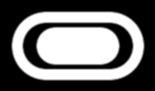
|
Now we use our mask to cut out the solid color of our logo,
and add some text to generate a plain, solid color logo.
convert logo_mask.png -background red -alpha shape \
-font Candice -pointsize 36 -fill white -stroke black \
-gravity Center -annotate 0 "Ant" \
logo.png
| |
![[IM Output]](logo.png)
|
Now lets give it a 3D-look, by using
Overlay Highlighting techniques.
convert logo.png -alpha extract -blur 0x6 -shade 110x30 -normalize \
logo.png -compose Overlay -composite \
logo.png -alpha on -compose Dst_In -composite \
logo_3D.png
| |
|
Adding shadows is also easier thanks to the new
Shadow Generation operator provided by IM.
convert logo_3D.png \( +clone -background navy -shadow 80x4+6+6 \) +swap \
-background none -layers merge +repage logo_3D_shadowed.png
| |
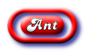
|
Just for fun lets finish by overlay our logo on a 'rough paper' like
background. A huge number of other background canvases can also be created,
see
Background Examples for a collection of
such examples.
convert logo_3D_shadowed.png \
\( +clone +repage -alpha off -fx 'rand()' -shade 120x30 \
-fill grey70 -colorize 60 \
-fill lavender -tint 100 \) \
+swap -composite logo_3D_bg.jpg
| |
![[IM Output]](logo_3D_bg.jpg)
|
Reflections
Reflections are relatively easy to do, but often it does not seem like it.
You have to deal with aspects such as surface color and texture, and also with
how any such effect increases with the distance between the surface reflection
and the object that is being reflected by that surface. Basically what should
be a relatively simple matter, very quickly becomes quite a complex one.
![[IM Output]](../images/pokemon.gif)
So lets start with the reflection of a relatively simple image, in this case
an image of a Pokemon character, Azumarill (See right). Substitute your own
image if you like.
Now doing a reflection of a perfect mirror you would simply copy and flip the
source object, and add some background behind it to make it to give it some
context. For example...
convert pokemon.gif \( +clone -flip \) -append \
-size 100x100 xc:black +swap \
-gravity North -geometry +0+5 -composite reflect_perfect.png
| |
![[IM Output]](reflect_perfect.png)
|
Surface Color - General Attenuation
The thing to note in the above is that the reflection being perfect, does not
really look like a reflection in a black surface. It's more like a 'mirror
tile' of the original image, which is also true. Even a normal bathroom
mirror does not reflect all the light hitting it, and it is about the best
mirror you can get. So the first rule of reflections is...
Reflections are never ever perfect.
All reflections are never a 100% reflection, and as such are colored by the
surface (or the surrounding environment). It is an imperfect world, and
reflections enhance and demonstrate these imperfections very well.
So let use try this again, but this time lets color the reflection by the
color of the reflecting surface.
You can do this in two ways. The simplest method is to simply
Colorize the reflection the same color as
the surface. The amount of coloring depends on how good the surface is at
reflecting, for colored surfaces, that is usually pretty bad, so a large
amount of color needs to be added, "
65%" is quite good for
a black surface.
convert pokemon.gif \
\( +clone -flip -fill black -colorize 65% \) -append \
-size 100x100 xc:black +swap \
-gravity North -geometry +0+5 -composite reflect_colored.png
| |
![[IM Output]](reflect_colored.png)
|
Much better... Now it actually looks like a reflection!
The other way to make a reflection weaker is to make the reflected image
semi-transparent, or translucent. For example multiply the images alpha
value, to make only about 35% of the source object visible.
convert pokemon.gif -alpha on \
\( +clone -flip -channel A -evaluate multiply .35 +channel \) -append \
-size 100x100 xc:black +swap \
-gravity North -geometry +0+5 -composite reflect_alpha.png
| |
![[IM Output]](reflect_alpha.png)
|
This is actually preferred, as it means the color of the surface can be any
color or even some type of color texture or pattern.
For example, lets generate a horizontal wooden floor, using an infinite tiling
technique from
Viewing Distant Horizons.
convert tile_wood.gif -set option:distort:viewport 100x100 \
-virtual-pixel tile -distort Perspective \
'0,0 -20,65 96,0 60,40 96,96 120,55 0,96 50,99' \
wooden_floor.png
| |
![[IM Output]](wooden_floor.png)
|
And now overlay our image with its semi-transparent reflection onto this
wooden floor.
convert pokemon.gif -alpha on \
\( +clone -flip -channel A -evaluate multiply .35 +channel \) -append \
wooden_floor.png +swap \
-gravity North -geometry +0+5 -composite reflect_wood.png
| |
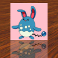
|
Without the reflected object the wooden surface looks rather dull and
lifeless, but with some object reflected in it, the floor suddenly has
a very highly polished look to it!
Distorted Source
Okay. Lets try something a little more fancy, and give the image a bit of some
3D
Perspective depth to it.
convert pokemon.gif -alpha on -virtual-pixel transparent \
+distort Perspective '0,0 0,0 0,64 0,64 64,0 54,10 64,64 54,54' \
\( +clone -flip -channel A -evaluate multiply .35 +channel \) -append \
+filter -size 100x100 xc:black +swap \
-gravity North -geometry +0+5 -composite reflect_distort_bad.png
| |
![[IM Output]](reflect_distort_bad.png)
|
Which is obviously wrong. It looks like the image is distorted, but remains
flat on to the original user. Why because...
Object that is in contact the surface will also contact their reflection.
It seems pretty obvious but I have seen people get this wrong. Of course if
the object is floating about the surface then they will not make contact.
One way to fix this would be to distort the source image and the reflection of
that image separately, before
Layer Merge the
results together.
convert pokemon.gif -alpha on -virtual-pixel transparent \
\( -clone 0 \
+distort Perspective '0,0,0,0 0,64,0,64 64,0,54,10 64,64,54,54' \) \
\( -clone 0 -channel A -evaluate multiply .35 +channel \
+distort Perspective '0,0,0,128 0,64,0,64 64,0,54,98 64,64,54,54' \
\) -delete 0 +swap -background none -layers merge \
+filter -size 100x100 xc:black +swap \
-gravity North -geometry +0+5 -composite reflect_distort_sep.png
| |
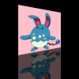
|
As you can see by the very different set of distortion parameters, distorting
a reflection can get very difficult. It is even more difficult as a simple
change to the first distortion requires a calculated change to the second
distortion for the reflected image.
There are two more rules that will tell you how the coordinates of the
reflected distortion should be calculated.
Reflections in a horizontal surface are always directly downward.
That is a reflection is always toward the user, which as an user is directly in
front of an image, will mean that any reflection in a horizontal surface will
be downward, directly toward the user. This is a law of physics, and that is
one thing you do not want to break, if you want your images to be at least
semi-realistic.
And finally one other rule that you should remember.
Vertical surfaces, reflected in horizontal surfaces have
reflections that the same height as the reflected object
It does not matter how 'distant' the object appears to be in an image, the
height of its reflection in the final image should be the same height as the
object being reflected! It is not obvious, and very easy to get wrong.
These three rules mean, that the X value of the reflected coordinate remains the
same, by the Y value is flipped downward around the 'surface contact point' by
the same amount it is above that point.
As such with some care you can calculate the distortion coordinates for the
reflection, based on the coordinates of the distorted source image.
Now these rules also provide us with a method that can simplify reflections
for distorted images. Just append the reflection to the source image first,
then distort the source image as if it has no reflection attached, letting its
reflection distort along with the main image...
convert pokemon.gif -alpha on -virtual-pixel transparent \
\( +clone -flip -channel A -evaluate multiply .35 +channel \) -append \
+distort Perspective '0,0,0,0 0,64,0,64 64,0,54,10 64,64,54,54' \
-gravity North -crop 100x100+0-5\! \
-background black -compose Over -flatten reflect_distort.png
| |
![[IM Output]](reflect_distort.png)
|
As you can see this works a lot easier, and you only have one set of
distortions to deal with for the object, making changes a lot simpler too.
It also allows you to use distortions that would be otherwise be impossible to
repeat to create a separate reflection. For example, generating a 3D arc from
the image...
convert pokemon.gif -alpha on -virtual-pixel transparent \
\( +clone -flip -channel A -evaluate multiply .35 +channel \) -append \
+distort Barrel '0,0,0,1 0,0,-.35,1.5 32,32' \
-gravity North -crop 100x100+0-5\! \
-background black -compose Over -flatten reflect_3Darc.png
| |
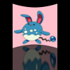
|
One final point before we proceed to the next section...
Shadows will generally obey the same rules as reflections, except for the last
two rules. They may not fall directly downward, but point away from the light
source (parallel for distant light sources). Also they will not be a same
distance from the 'surface contact point', but they will have the same ratio
of distances, just not 1:1 ratio as you get for reflections.
Gradient Attenuation
So far we have dealt with a perfectly smooth reflective surface, but
most surfaces are not polished to a mirror shine. A seemingly smooth surface
is actually not smooth at smaller scales and this in turn effects the light
that is reflected off such a surface.
That effect also grows stronger with the distance the reflected light has to
travel between the object and the point of reflection. As such...
Reflections get weaker and more distorted,
the further it is from the source image.
The simplest way to create a distance effect is to make the reflection weaker
the further it is from the surface. For this is is usually acceptable to make
the reflection a little brighter close to the image.
convert pokemon.gif -alpha on \
\( +clone -flip \
-size 64x28 gradient:gray40-black \
-alpha off -compose CopyOpacity -composite \
\) -append \
-gravity North -crop 100x100+0-5\! \
-background black -compose Over -flatten reflect_attenuated.png
| |
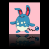
|
This works reasonably well, and is so easy to generate that it is a rather
common method of generating reflections.
The technique works as a good percentage of the light being reflected is not
a perfect reflection, but more of the global environment. The more distant
you are from the original image, less of the original image is
reflected.
Blurred Attenuation
The component that makes up the real reflection of the source object, does not
simply get weaker with distance. In reality reflections get more blurry,
fuzzy and distorted with distance, as the reflecting surface is generally not
very smooth. This is not a macro distortion, but distortions at very small
microscopic levels. The same effect that produces specular lighting
reflections.
That is close in to the source of the reflection they can be reasonably sharp,
but the further you get from the source the more blurred the image becomes.
Before IM version 6.5.5-0, this was something that was very difficult to
achieve (it was possible, but not without a lot of trickiness). However now
you can use
Variable Blur Map to blur
a reflection based on its distance from the source image quite easily.
However for this to work, it is a good idea to add a transparent border around
the object into which to blur. In these examples, I extended the final image
so you can see the whole reflection, so you can appreciate its effect.
convert pokemon.gif -alpha on \
-background None -gravity South -extent 100x100 \
\( +clone -flip -channel A -evaluate multiply .35 +channel \
-size 100x100 gradient:gray5-white \
-compose Blur -set option:compose:args 10 -composite -compose Over \
\) -append -trim +repage \
-gravity North -crop 100x140+0-5\! \
-background black -compose Over -flatten reflect_blurred.png
| |
![[IM Output]](reflect_blurred.png)
|
The reflection blur can be enhanced further by using a vertically stretched
blur ellipse. For example using elliptical blur arguments of
'
10x30' rather than a simple circluar blur of '
20'.
If you then combine the "Blurred Attenuation" with a "Gradient Attenuation"
you will start to get a very realistic reflection of a typical,
not-so-polished, but smooth surface reflection.
convert pokemon.gif -alpha on \
-background None -gravity South -extent 100x100 \
\( +clone -flip \
\( -size 100x64 gradient:'rgba(0,0,0,0.6)-none' \
-size 100x36 xc:none -append \
\) -compose Dst_In -composite \
\( -size 100x100 gradient:gray5-white \
\) -compose Blur -set option:compose:args 4x8 -composite \
\) -append -trim +repage \
-gravity North -crop 100x140+0-5\! \
-background black -compose Over -flatten reflect_blur_atten.png
| |
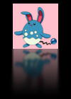
|
You would be hard pressed to get a better reflection image for flat surfaces
than this.
Future: To add examples of...
Surface Texture effects
frosted - or non smooth surfaces (small scale randomised distortions)
rippled - water reflections
(very little blur or attenuation, just stronger macro distortion)
Jigsaw Pieces
One of the most interesting things I have been asked to help with was to cut
out and enhance an odd shaped 'jigsaw' piece from a larger picture. Actually
Theo van Hoesel, also known as "
Mr Jigsaw", wanted to
generate a lot of separate pieces, at lots of different rotations. The
following was developed from our discussion for just one piece, but with the
right set of templates, any pattern of pieces can be generated.
|
To the right is a thumbnail linked to a 800x600 image of a photo of the
Holocaust Memorial, Berlin, Germany. I took this photo during on my European
trip in April 2006. It looks like a great image to make a really hard jigsaw
puzzle from.
And below it is a template image of the jigsaw piece I will be extracting from
the above image. It was part of a set of such images. The full set of jigsaw
pieces contains 192 such masks, in a 16 by 12 array, including edges and
corners.
This specific jigsaw piece is a 100x100 pixel mask, and
designed to be used at a +365+96 offset on an
800x600 pixel image. These figures are only important if you
have a large set of different pieces that will fit together. If you don't plan
to do this then of course you can use any offset you like.
| |
![[photo]](../img_photos/holocaust_tn.gif)
|
![[IM Output]](../images/jigsaw_tmpl.png)
|
I myself have collected a number of such jigsaw sets, which can let me make a
jigsaw of any image. And this is what Theo van Hoesel, is actually doing on
his
website.
If you are making an actual jigsaw puzzle then the offset information is very
important, as it identifies the location and placement of that piece from the
original image. As such I will try to preserve this information. Note that
offsets for masks could in some cases be negative, due to the extra padding
around the shape, so you may need to test and adjust image commands to handle
this situation.
The extra padding itself will allow you to easily rotate, add thickness and
shadow effects to the final image, without needing to change the size or
offset of the cutout jigsaw piece.
First however lets convert this template into an outline.
convert jigsaw_tmpl.png -edge .5 -blur 0x.5 jigsaw_edge.png
| |
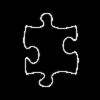
|
I can then overlay this onto the image to get a rough idea as to what is going
to be cutout to form the jigsaw piece.
convert holocaust_md.jpg \
\( jigsaw_edge.png -negate \) -geometry +365+96 \
-compose multiply -composite \
-crop 100x100+365+96 +repage jigsaw_outline.png
| |
![[IM Output]](jigsaw_outline.png)
|
Normally this is not done when generating a jigsaw, but is useful to do when
the position of the piece is not important (as it isn't part of a larger
puzzle). If so you can adjust the offset to select better content for that
jigsaw piece.
  |
Due to the way "-edge"
works the jigsaw outline generated above is inside the masked (white) area
masking image. This can be important if you like to make use of this
outline later.
|
Okay we have a jigsaw shape, and an offset for the piece to cut out.
so lets cut it out and rotate it too.
convert holocaust_md.jpg \
-crop 100x100+365+96\! -background none -flatten +repage \
\( jigsaw_tmpl.png +matte \) -compose CopyOpacity -composite \
-rotate -20 -gravity center -crop 100x100+0+0 +repage \
jigsaw_cutout.png
| |
![[IM Output]](jigsaw_cutout.png)
|
Note that we cropped the source image to the area covered by out template
shape. We will not need the area outside the mask, and removing it early will
speed up the image processing.
Also note the special use of a
viewport crop,
followed by "
-flatten".
This method of cropping will ensure that we will be guaranteed a 100x100 pixel
image from which to 'cutout' the template, even when using masks of edge or
corner pieces, and also handle a negative offset for pieces on or near the
top, or left, edges of the image.
The rotate is also performed at this point as most enhancements will add
effects based on a specific direction. The result of that rotate is also
center cropped as this operator, normally expands the resulting image size,
depending on the rotation angle used, and we don't want it to do that.
The first enhancement is to give the pieces a slightly beveled, or rounded,
highlight around the edges. This is as per
Shade Highlight Overlays, which allows
fine control (4 separate factors) of way the highlight is produced.
convert jigsaw_cutout.png \
\( +clone -channel A -separate +channel -negate \
-background black -virtual-pixel background \
-blur 0x2 -shade 120x21.78 -contrast-stretch 0% \
+sigmoidal-contrast 7x50% -fill grey50 -colorize 10% \
+clone +swap -compose overlay -composite \) \
-compose In -composite jigsaw_bevel.png
| |
![[IM Output]](jigsaw_bevel.png)
|
In a real jigsaw this bevel is a result of machine press cutting the jigsaw
pieces. It also gives the pieces a slight dent, so if the pieces are fitted back
together you can still see the impression of the cuts.
Now lets add some thickness to the piece. This is the best and quickest way I
have found, though I don't consired it a very good technique. If you can find
something better, then please let me know.
convert jigsaw_bevel.png \
\( +clone -fill DarkSlateGrey -colorize 100% -repage +0+1 \) \
\( +clone -repage +1+2 \) \( +clone -repage +1+3 \) \
\( +clone -repage +2+4 \) \( +clone -repage +2+5 \) \
-background none -compose DstOver -flatten \
jigsaw_thickness.png
| |
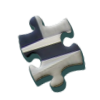
|
And finally how about some shadow.
convert jigsaw_thickness.png \
\( +clone -background Black -shadow 50x3+4+4 \) \
-background none -compose DstOver -flatten \
jigsaw_shadow.png
| |
![[IM Output]](jigsaw_shadow.png)
|
All the above commands can be easily saved into a single shell script, and I
have done this for my own use.
The script "
jigsaw" will
take three image parameters: source photo, template, and destination, as well
as numerous options to enable the various enhancements shown above. It does
not need to use a jigsaw shape either. Any mask template could be used to cut
out parts of images, with appropriate added effects.
The biggest difference between the above, and my script version, is that by
default, the script keeps the final image as small as possible, while keeping
track of offset of the cutout image. By preserving this offset position you
can to use a simple "
-mosaic" or "
-flatten" to overlay multiple pieces back together to produce
interesting effects (see last example below).
Here is just a few examples of using this script, in a number of ways.
jigsaw -o +365+96 -m null: jigsaw_tmpl.png jigsaw_mask.png
convert -size 800x600 xc:gray miff:- |\
jigsaw -r 30 -l -h -s miff:- jigsaw_mask.png jigsaw_grey.png
jigsaw -r -60 -h -t 4 -s holocaust_md.jpg jigsaw_mask.png jigsaw_piece.png
convert jigsaw_cnr.png -resize 50% -flip -flop -repage 120x90 \
-background black -flatten -flip -flop jigsaw_cnr_tmpl.png
jigsaw -t 3 -s -r 15 -d +15+7 \
holocaust_tn.gif jigsaw_cnr_tmpl.png holocaust_piece_tn.png
convert jigsaw_cnr_tmpl.png -negate png:- |\
jigsaw -t 3 -s holocaust_tn.gif png:- holocaust_puzzle_tn.png
convert holocaust_puzzle_tn.png holocaust_piece_tn.png \
-background none -mosaic holocaust_jigsaw_tn.png
|

![[IM Output]](jigsaw_grey.png)
![[IM Output]](jigsaw_piece.png)
![[IM Output]](../images/jigsaw_cnr.png) 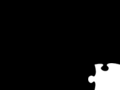
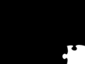
![[IM Output]](holocaust_piece_tn.png) 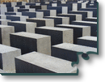
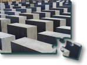
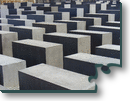
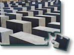
The last image is the beginning of a possible jigsaw thumbnail style...
It takes a corner jigsaw piece, and with some scaling and expansion converts
the mask, into a full sized image template mask. This is then used to not
only cut out the corner piece from an existing thumbnail, but also is negated
to produce the rest of the image as well. Overlaying these two images then
produces quite a fancy looking jigsaw thumbnail.
Note the use of a '
-d +15+7' in the options to the piece
creation. This displaces the 'page offset' of the generated PNG image by a
small amount relative to its original position in the image, producing the
result shown, simply and easily. See the script itself for the other options
available.
 |
As page offsets generated can be negative, and could contain an optional
soft shadow effect, it is recommended that only PNG images be used for
extracted pieces. GIF images cannot handle negative page offsets, or
shadow effects, nor does it produce a smooth looking anti-aliased edges
when transparency is involved.
Generally you should avoid GIF (and JPEG) images for all but your final
image. For more information see Common Image
Formats examples page.
|
You are not limited to jigsaw puzzle templates, but any shaped mask can be
used with any image. Let me know what you come up with.
I am not quite finished with the development of the "
jigsaw" script, as I would like some
better controls for the highlighting, thickness and shadow effects, and
possibly a 'negate mask' option. It is however basically a complete working
program you are free to use. Give me a link back if you use it for a web page
:-)
For those with some PerlMagick API skill, try taking the above script and
converting it to PerlMagick for speed, then submitting it to me so that
everyone else can also use it, and know just how good you are at using IM.
Further suggestions and ideas are always welcome.
If you are just wanting to cut out all the pieces from an image using
a collection of masks (with or without virtual pixel offsets), then the
following command will let you do ALL of them very quickly.
convert mask_*.png -set filename:mask %t -alpha shape \
null: image.jpg -compose In -layers composite \
pieces_%[filename:mask].png
|
Each other resulting "
pieces_mask_*.png" images, contains not
only the appropriate image from the original image at the correct offset, but
also preserves that offset in the final image. It does this using the
Multi-Layer Composition to merge all the
images to the left of the special "
null:" marker image, with the
single image on the right.
As an added bonus it will incorporate the filename of the mask that was used
into the piece image filename (including its final image file format), making
identifying what piece is what much easier. (See
Filename Percent Escapes for details.
Note that the masks do not have to completely cover the whole original image,
but should not leave spaces or gaps between pieces. Of course for a proper
jigsaw all the masks should
Align
properly, so as to produce a seamless whole, such as shown in the
Dst_Out Composition examples.
"Gel" Effects
The 3-D shadings used above is only the start of what you can do with
highlight and shaded effects. By doing various histogram adjustments to
the output of "
-shade" an enormous
range of possibilities is available.
One such effect you can reproduce is known as a 'Gel' effect, such as often
see in "
Photoshop how-to web sites (Google for "Gel Effects
Tutorial").
First lets create the shape we need. This could be a pre-prepared image or
extracted from a 'Dings' font, like we did with the 3D bullet shaped "heart"
above.
In this case lets use a simple oval shape for a button...
convert -size 100x60 xc:none \
-fill red -draw 'circle 25,30 10,30' \
-draw 'circle 75,30 90,30' \
-draw 'rectangle 25,15 75,45' \
gel_shape.png
| |
![[IM Output]](gel_shape.png)
|
Now lets add the sharp 'Gel' highlight to the colored shape, using a highly
modified blurred shade operation...
convert gel_shape.png \
\( +clone -alpha extract -blur 0x12 -shade 110x0 -normalize \
-sigmoidal-contrast 16,60% -evaluate multiply .5 \
-roll +5+10 +clone -compose Screen -composite \) \
-compose In -composite gel_highlight.png
| |
|
We applied "
-shade" to a copy of
the transparency (matte) channel after blurring it to round it off. Ths shade
used a light source without any 'height' or 'azimith' angle to it, which
basically means wer get a grey colored highlight of just one side of the
blurred shape, and black for everything else.
This highlighting greyscale was then adjusted (sharpened) using the "
-sigmoidal-contrast"
operator to reduce the size the highlighted area (the '
60%'
threshold level) and sharpen its edges (using a very high '
16'
exponential factor). With such a high exponential value, the operator is
almost acting like a 'fuzzy' "
-threshold" operator, to produce a flat region of color basied on
the shape of the original image. For more information on this smooth
contrast/threshold function see
Sigmoidal
Non-linearity Contrast.
And finally the level of the highlight was adjusted using a "
-evaluate" to multiply all the
colors by the desired highlight level, then a "
-roll" is used to shift its
position into the shaped area.
Now, as the highlight is grey on black (black to remain unchanged), a
'
Screen' alpha composition is
used to lighten the non-black areas by the given grey level.
Now all that is left is to darken the borders a little...
convert gel_highlight.png \
\( +clone -alpha extract -blur 0x2 -shade 0x90 -normalize \
-blur 0x2 +level 60,100% -alpha On \) \
-compose Multiply -composite gel_border.png
| |
![[IM Output]](gel_border.png)
|
Note that this time I used a vertically lit "
-shade" for edge darkening, which
makes the areas I want to preserve unchanged, a white color. As such after
adjusting the greyscale using a
Reversed
Level Adjustment, and restoring the transparency saved by the
Alpha Extract Method, I was then able to
use a '
Multiply' alpha
composition to darken the effected borders.
Lets finish of the oval 'Gel' button with some text and shadow effects...
convert gel_border.png \
-font Candice -pointsize 24 -fill white -stroke black \
-gravity Center -annotate 0 "Gel" -trim -repage 0x0+4+4 \
\( +clone -background navy -shadow 80x4+4+4 \) +swap \
-background none -flatten gel_button.png
| |
|
"Aqua" or "Bubble" Effects
You can also adjust a full 3-D "
-shade" (with a 30 degree lighting) tint to produce a "Aqua" water
effect. For this however we need to do a histogram adjustment in a way that
is similar to what you do with GUI graphical programs like "
Gimp"
and "
Photoshop".
I will first do this slowly step by set so you can see the steps I am
following.
First lets create an image to use, in this case a curvy letter A.
convert -background none -fill DodgerBlue \
-font Candice -pointsize 72 label:A -trim +repage \
-bordercolor None -border 1x1 \
aqua_shape.png
|
|
![[IM Output]](aqua_shape.png)
|
Note that I added a one pixel transparent border around the image. This makes
the next processing steps just that little bit easier.
Now we need to generate
Rounded Shade
of this shaped image.
convert aqua_shape.png \
-alpha Extract -blur 0x8 -shade 130x30 -alpha On \
-background gray50 -alpha background -auto-level \
aqua_shade.png
|
|
![[IM Output]](aqua_shade.png)
|
The funny line that deals with
Alpha
Background is to reset the hidden color of the transparent areas to
a mid-tone grey, so that it does not have an effect on the color
normalization. This can be very important.
Now we convert that shade into a 'lighting effect' that looks vaguely like
the way light is distorted by a bubble of water or glass.
convert aqua_shade.png \
-function polynomial 3.5,-5.05,2.05,0.3 \
aqua_lighting.png
|
|
![[IM Output]](aqua_lighting.png)
|
The
Polynomial Function which
is used for a
Curves Adjustment of the
image. It is this function that gives the overall effect, and can be
difficult to determine.
To do I passed the control points needed for this 'curve' to the IM support
shell script called "
im_fx_curves". This then returns the the 'coefficents' for
the polynomial equantion needed for the 'curve that fits these control points.
im_fx_curves -c -p 0,30 100,80 50,50 80,50 > aqua_coeffs.txt
|
The final adjustment of this lighting effect is make the edges of the
lighting effect darker.
convert aqua_lighting.png \
\( +clone -alpha extract -blur 0x2 \) \
-channel RGB -compose multiply -composite \
aqua_light+edge.png
|
|
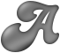
|
And the shading overlay is complete. All that is left is to apply this
to the original image, using
HardLight
Composition.
convert aqua_shape.png aqua_light+edge.png \
-compose Hardlight -composite aqua_result.png
|
|
![[IM Output]](aqua_result.png)
|
Notice that the final overall color of the resulting image is actually the
original color of the original shape. In fact you coluld even apply this to
a multi-colored image, without any problems at all.
So lets repeat all the steps above, including the creation of the initial
shape image, all in one command.
convert -background none -fill DodgerBlue \
-font Candice -pointsize 96 label:'Aqua Text' -trim +repage \
\
\( +clone -bordercolor None -border 1x1 \
-alpha Extract -blur 0x8 -shade 130x30 -alpha On \
-background gray50 -alpha background -auto-level \
-function polynomial 3.5,-5.05,2.05,0.3 \
\( +clone -alpha extract -blur 0x2 \) \
-channel RGB -compose multiply -composite \
+channel +compose -chop 1x1 \
\) \
-compose Hardlight -composite aqua_text.png
|
![[IM Output]](aqua_text.png)
If you study the above you will see that all the steps previously outlined
is applied to generate the lighting image which is then composited onto the
original image.
Tilable Stars and Comets
I wanted to make a tile of random star fields (with the stars of variable
intensities) for various purposes. This was the result of my slowly improving
attempts at this.
A
random noise image is used to thin itself
out generate a speckle pattern.
convert -size 100x100 xc: +noise Random -channel R -threshold 5% \
-negate -channel RG -separate +channel \
-compose multiply -composite speckles.gif
|
|
![[IM Output]](speckles.gif)
|
This pattern is the basis for glitter animation effects, but also the start
point for other effects.
For example to make stars we need to modify its random 'speckle' pattern a bit
more, so as to make things more realistic.
convert -size 100x100 xc: +noise Random -channel R -threshold 1% \
-negate -channel RG -separate +channel \
\( +clone \) -compose multiply -flatten \
-virtual-pixel tile -blur 0x.4 -contrast-stretch .8% \
stars.gif
|
|
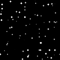
|
Note that I multiply not only the speckle mask ('
R' channel) but
the star intensity image ('
G channel) twice as well. This
produces a squared fall-off in the pixel intensities so that more darker stars are
present than bright ones, just as it is in the real night sky.
After this we enlarge the size of the stars based on their intensity by
Blurring. This produces an effect similar to
the stars burning onto an astronomers photographic plate, making it even more
realistic. The larger the blur value the larger the effect. A final
"
-contrast-stretch" brings the results back to visibility.
By using two
random noise images, (one for
the mask, the other for the star color), we can generate randomly colored
stars, instead of simple greyscale ones.
convert -size 100x100 xc: +noise Random -channel R -threshold 1% \
-negate -channel RG -separate +channel \
\( xc: +noise Random \) -compose multiply -flatten \
-virtual-pixel tile -blur 0x.4 -contrast-stretch .8% \
stars_colored.gif
|
|
![[IM Output]](stars_colored.gif)
|
This however may need more work, as we need to square the intensity of the
colors directly instead of just simply multiplying them against a linear
distribution. It does however work, and provides a starting point for further
development.
Note the color does not have to be random but could easily come from some
other image for the stars. For example the star color itself could be sourced
from the image that will be used as the final background.
Now that I have a star-scape generator, I can simply use "
-motion-blur" to create a
field of falling stars!
convert -size 100x100 xc: +noise Random -channel R -threshold .4% \
-negate -channel RG -separate +channel \
\( +clone \) -compose multiply -flatten \
-virtual-pixel tile -blur 0x.4 -motion-blur 0x20+45 -normalize \
star_fall.gif
|
|
![[IM Output]](star_fall.gif)
|
Of course we want less stars and less of a 'fall-off' in star intensities.
By
Polar Distorting the image we can make
the comets flying or spiraling into a point!
convert -size 250x100 xc: +noise Random -channel R -threshold .4% \
-negate -channel RG -separate +channel \
\( +clone \) -compose multiply -flatten \
-virtual-pixel Tile -background Black \
-blur 0x.6 -motion-blur 0x15-90 -normalize \
+distort Polar 0 +repage star_inward.gif
convert -size 250x100 xc: +noise Random -channel R -threshold .4% \
-negate -channel RG -separate +channel \
\( +clone \) -compose multiply -flatten \
-virtual-pixel Tile -background Black \
-blur 0x.6 -motion-blur 0x15-60 -normalize \
+distort Polar 0 +repage star_spiral.gif
| |
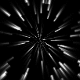
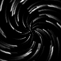
|
Here we motion blur the stars in six directions (in pairs) then merge them
together to create a field of 'star bursts', such as you get in a glass lens.
convert -size 100x100 xc: +noise Random -channel R -threshold .2% \
-negate -channel RG -separate +channel \
\( +clone \) -compose multiply -flatten \
-virtual-pixel tile -blur 0x.3 \
\( -clone 0 -motion-blur 0x10+15 -motion-blur 0x10+195 \) \
\( -clone 0 -motion-blur 0x10+75 -motion-blur 0x10+255 \) \
\( -clone 0 -motion-blur 0x10-45 -motion-blur 0x10+135 \) \
-compose screen -background black -flatten -normalize \
star_field.gif
|
|
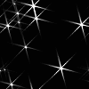
|
Note how the darker stars only generate a small dot and very little in the way
of a 'star burst', while the bigger bright stars generate a very large
'star burst'.
Now if I can find a way to add a 'sinc()' type blurring so as to produce a
flare 'ring' around the brightest stars as well, we will have a great star
field generator. Add some plasma background and we can even generate fake
astronomical photos of nebula and gas clouds.
By combining the above with a
plasma glitter
animation you can make set of stars that look like christmas decorations.
convert -size 100x100 xc: +noise Random -separate \
null: \
\( xc: +noise Random -separate -threshold 50% -negate \) \
-compose CopyOpacity -layers composite \
null: \
plasma:red-firebrick plasma:red-firebrick plasma:red-firebrick \
-compose Screen -layers composite \
null: \
\( xc: +noise Random -channel R -threshold .08% \
-negate -channel RG -separate +channel \
\( +clone \) -compose multiply -flatten \
-virtual-pixel tile -blur 0x.4 \
\( -clone 0 -motion-blur 0x15+90 -motion-blur 0x15-90 \) \
\( -clone 0 -motion-blur 0x15+30 -motion-blur 0x15-150 \) \
\( -clone 0 -motion-blur 0x15-30 -motion-blur 0x15+150 \) \
-compose screen -background black -flatten -normalize \) \
-compose multiply -layers composite \
-set delay 30 -loop 0 -layers Optimize stars_xmas.gif
|
|
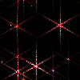
|
The above technique is only the start of what can be achieved. Using some
simple animations techniques, glitters and random flares can be created which
can be added to images. One simple example of this was provided in
GIF animation examples, using a simple
shell script "
star_field" to generate the stars bursts.
What can you to with this star generator?
Challenge:
- Generate glitter rather than stars. The initial speckle field should be
limited by a mask (say by multiplying). Both glitter and stars can then
be overlaid onto an image using 'screen' composition.
- Use a masked 'speckle field' to generate star bursts for overlaying. By
masking the seeds rather than the complete star burst, means that 'rays'
of the bursts can leave the masked area to overlay other parts of the
image. That is rays are not just 'cutoff'.
- Create an animation of a random star bursts. This may require you to
animate a single field of star bursts (perhaps with the rays rotating).
- By generating a few star burst animations, you can merge them
together to form a series of overlapping star bursts from different
locations.
- Find a single 'seed' point on the brightest part of the image by histogram
stretching a thresholding. Then picking single pixels until one hits the
masked area.
- Creating stars on the edge a flat shaded shape.
If you manage any of the above challenge or use the star generator for some
other purpose, please let me and the rest of the IM community know.
Radial Flares
Experiments in generating radial flares.
Note that the width of the initial image before polar distorting, basically
sets the number of rays that will be produced.
convert -size 100x1 xc: +noise Random -channel G -separate +channel \
-scale 100x100\! +write flare_1a.png \
\( -size 100x100 gradient:'gray(100%)' -sigmoidal-contrast 10x50% \) \
-colorspace sRGB -compose hardlight -composite +write flare_1b.png \
-virtual-pixel HorizontalTileEdge -distort Polar -1 \
flare_1_final.png
|
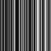
![[IM Output]](flare_1b.png) 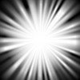
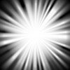
Note how I use "
+write"
to save intermediate images for display. this is a debugging technique which
is detailed in
Complex Image Processing and
Debugging.
Here is another example using multiple overlays to achieve a different looking
flare. Note the technique used to generating intermediate debugging and
example images showing the steps involved.
convert -size 100x1 xc: +noise Random -channel G -separate +channel \
-size 100x99 xc:black -append -motion-blur 0x35-90 \
\( -size 100x50 gradient:'gray(0)' \
-evaluate cos .5 -sigmoidal-contrast 3,100% \
-size 100x50 xc:'gray(0)' -append \) \
\( -size 1x50 xc:'gray(0)' \
-size 1x1 xc:'gray(50%)' \
-size 1x49 xc:'gray(0)' \
-append -blur 0x2 -scale 100x100\! \) \
\
-scene 10 +write flare_2%x.png \
\
-background 'gray(0)' -compose screen -flatten +write flare_2f.png \
\
-virtual-pixel HorizontalTileEdge -distort Polar -1 \
-colorspace sRGB flare_2_final.png
|
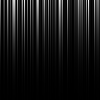
![[IM Output]](flare_2b.png)
![[IM Output]](flare_2c.png)
![[IM Output]](flare_2f.png)
![[IM Output]](flare_2_final.png)
The major problem with using polar distort for generating flare images is that
the rays become wider with the radius, where really we want them to either
remain a roughly constant width as they get dimmer, or at least thinner.
Ideas and pointers welcome
Color tinting can also be important in this type of image. For example here I
Tint Mid-Tone Colors Blue.
convert flare_2_final.png -fill SkyBlue -tint 100% flare_2_color.png
|
|
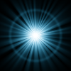
|
The percentage used for the "
-tint" operation can also be used to adjust the intensity of the
rays and flare ring, though it will not change the white core of the image
very much.
These examples were taken further in the IM Forum discussion
Using Radial Flare for a Mask.
![[photo]](../img_photos/holocaust_md.jpg)
![[Gnuplot]](aqua_plot.jpg)
![[Coeffs]](aqua_coeffs.txt.gif)
{kind=link}
{kind=link}
{kind=link}
{kind=link}
{kind=link}
{kind=link}
{kind=link}
{kind=link}
{kind=link}
{kind=link}
{kind=link}
{kind=link}
{kind=link}
{kind=link}
{kind=link}
{kind=link}
{kind=link}
{kind=link}
{kind=link}
{kind=link}
{kind=link}
{kind=link}
{kind=link}
{kind=link}
{kind=link}
{kind=link}
{kind=link}
{kind=link}
{kind=link}
{kind=link}
{kind=link}
{kind=link}
{kind=link}
{kind=link}
{kind=link}
{kind=link}